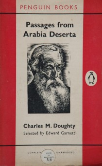

Wednesday, October the 30th, 2013
back to: title, date or indexes
Over at the indispensable Nigeness, Nige occasionally writes a postage about a fortuitous find in a secondhand bookshop. I thought I would follow his example, for yesterday I was in Rye, and in a tiny bookshop called the Tiny Bookshop I was happy to come upon a 1956 Penguin copy of Passages From Arabia Deserta by Charles Montagu Doughty, for a mere three pounds.

This is an abridged version of Doughty's best-known work, Travels In Arabia Deserta, which was extolled by The Observer thus: “Charles Montagu Doughty was one of the great men of our day, the author of a unique prose masterpiece. For many readers it is a book so majestic, so vital, of such incomparable beauty of thought, of observation, and of diction as to occupy a place apart among their most cherished literary possessions”.
I have written about Doughty before, with particular reference to his strangely hypnotic prose. Never having had the courage to tackle the Travels in their vast entirety, I shall look forward to reading this abridgement—still over 300 pages.